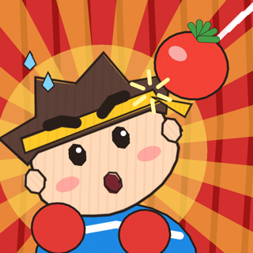

Don't Hit Me! Dodge Show
A hand-drawn crayon comedy for iPhone, iPhone Duo and iPad. You are the act and the audience is armed: slip, duck, jump and smash to the beat while tomatoes, fish and cake fly at the stage.
- Listen, then dodge: every kind of throw has its own warning sound two beats ahead
- They come from everywhere: the crowd, both wings, backstage and above
- One endless show: a new act, venue and special every 30 seconds, a BOSS every fifth act
- A 50-level tour through 5 venues, plus a Daily Challenge
- 5 fighting styles, hats, accessories, a sticker book · 14 languages
- The first three shows are free. One purchase unlocks the rest. No ads, plays offline
别砸我！躲避大舞台
手绘蜡笔画风的搞笑躲避秀，支持 iPhone、iPhone Duo 和 iPad。你在台上表演，台下的观众朝你扔番茄、活鱼和蛋糕：跟着节拍偏头、下蹲、起跳、击碎。前三场免费，一次购买解锁全部内容，没有广告，可离线游玩。